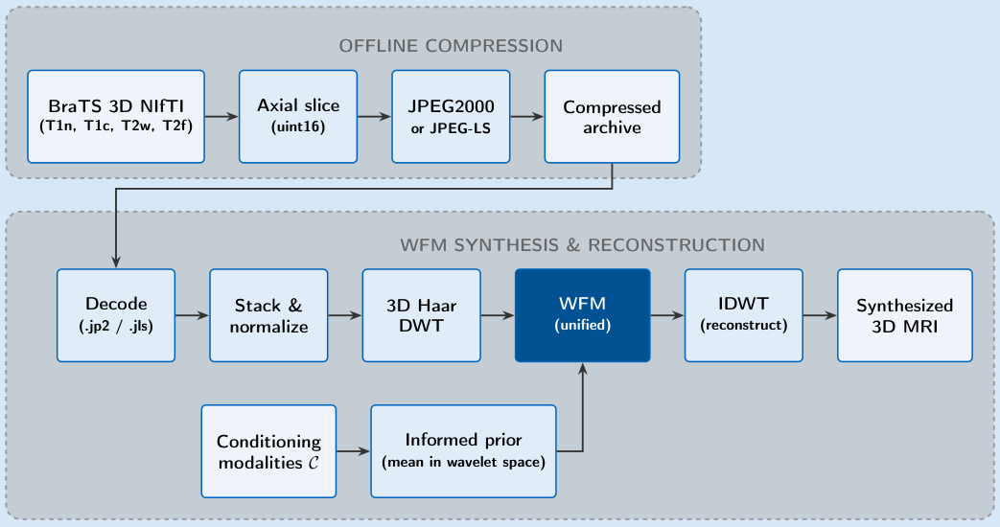
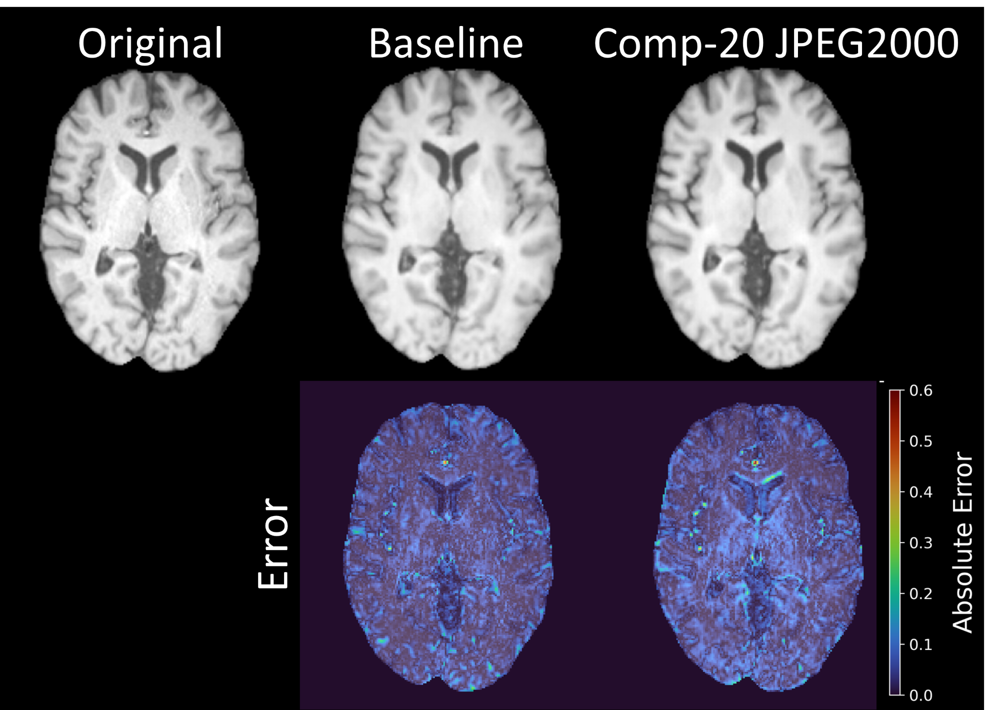
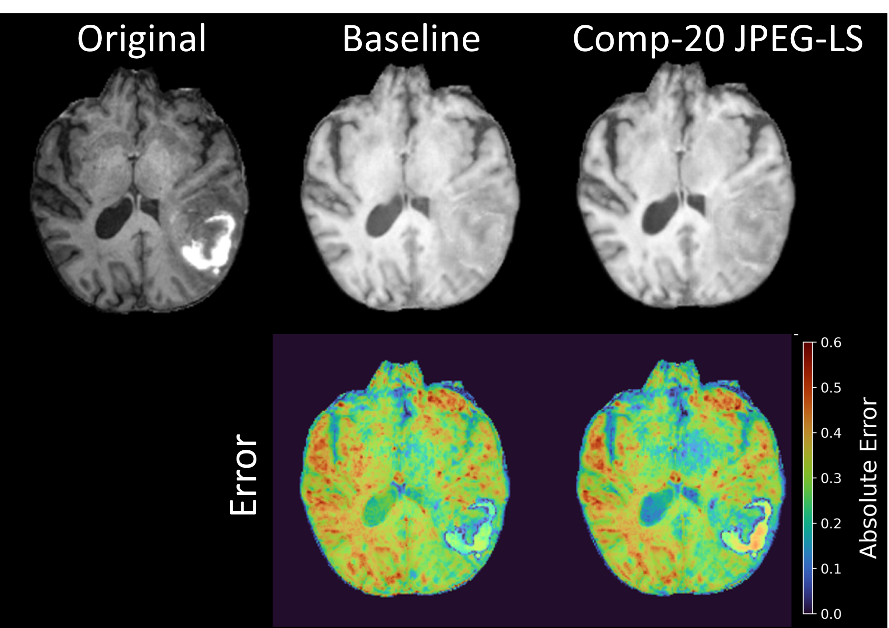

Large-scale multi-modal MRI datasets impose substantial storage and I/O costs, limiting the training of 3D generative models on commodity infrastructure. While lossy compression is known to preserve accuracy for discriminative segmentation networks, its effect on generative models, which must learn the full data distribution rather than a decision boundary, is unexplored. We study whether standard image codecs can effectively compress semantically rich brain tumor MRI while preserving the fidelity required to train and deploy a 3D MRI generative model. Each 3D volume is compressed with JPEG2000 or a near-lossless JPEG-LS pipeline. Next, a Wavelet Flow Matching model, conditioned on BraTS image sequences (T1n, T1c, T2, T2f), is trained on compressed data. At a 20:1 compression ratio, synthesis quality is statistically equivalent to a model trained on uncompressed data (mean PSNR 27.3 dB vs. 27.0 dB and mean SSIM 0.95 vs. 0.96 across modalities). JPEG2000 compression is a practical step toward scalable 3D MRI generative modeling without degrading synthesis quality.

BraTS volumes are compressed offline, decoded on the fly, and used to train a unified Wavelet Flow Matching synthesizer.


@inproceedings{fischer2026mricomp4flow,
title={{MRIComp4Flow}: Compression of {3D} Brain {MRI} for Training Multi-Modal Generative Models},
author={Fischer, Lisa K. and Riabets, Mykhailo and Rueckert, Daniel and Wiestler, Benedikt and Meyer-Baese, Anke and Nagar, Sandeep},
booktitle={Simulation and Synthesis in Medical Imaging ({SASHIMI}), {MICCAI} 2026 Workshop},
year={2026},
url={https://arxiv.org/abs/2608.10291}
}